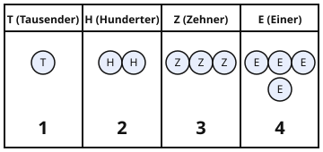
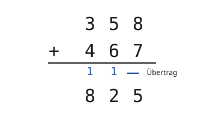
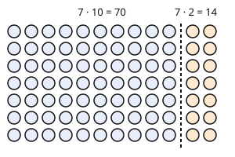
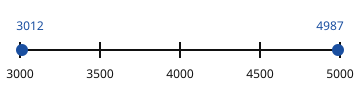

Medienübersicht
Alle Bilder, Audios und Videos dieser App mit ihrer Quelle und ihrer Lizenz.
Bilder

images/stellenwerttafel-1234.svg© CC0-1.0Verwendet auf: Bündeln und Zahlen lesen

images/tafel-milliarden.svg© CC0-1.0Verwendet auf: Zahlen bis zu den Milliarden

images/runden-strahl.svg© CC0-1.0Verwendet auf: Runden

images/addition-schriftlich.svg© CC0-1.0Verwendet auf: Schriftlich addieren und subtrahieren

images/rechteck-23-mal-14.svg© CC0-1.0Verwendet auf: Schriftlich multiplizieren und dividieren

images/plaettchen-tauschen.svg© CC0-1.0Verwendet auf: Rechengesetze und geschickt rechnen

images/plaettchen-verteilen.svg© CC0-1.0Verwendet auf: Rechengesetze und geschickt rechnen

images/ueberschlag-strahl.svg© CC0-1.0Verwendet auf: Überschlagsrechnung